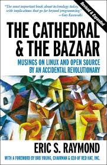

Understanding and using technology
The book The Cathedral and the Bazaar

What open-source means to me
The ideas expressed in this article are generally not my own, however, all the opinions are. And, those opinions are mostly a response from the book/manifesto of open-source, called The Cathedral and the Bazaar, by Eric Raymond. I stumbled across this book in my many random searches on the internet, and as I started reading it out of pure curiosity, and I immediately began correlating ideas behind the open software development strategies to many various activities in my life, including some epistemological interests in economics and philosophy. Being a US citizen, it is difficult to deny our ingrained capitalistic ideologies where companies are created and destroyed based on profit, and when you ask a typical person what their worth is, they often will give you a dollar value. It is a very slippery slope to think in terms of starting a company with a great idea with the hopes of one day making it big, but the open-source world says something different. It is a more humanitarian approach to creating great technology, rather than seeking fortunes through innovations.
Let me side-track for a moment to address the obvious opposite to the open-source ideology , closed-source, enter Bill Gates. In his book, "The Road Ahead", his insatiable hunger for technology, and how the lack on innovation and implementation in the electronics industry drove him to share his interests with the world by providing software to make computers more accessible to the not-so-tech-savvy. His business model was to make software, and sell it. The world at that time needed someone with the impetus of profit to get the ball rolling. Although, I do not think there are more people interested in technology now than there were in the 1970's, but technology is certainly more accessible, and learning has never been easier (although motivation is still hard for everyone to find). Don't get me wrong, Microsoft has fine products, but they just don't serve society the way we need.
The fundamental flaw with closed-source software is that it inherently forces the user to be a pure consumer, rather than a consumer and creator. This, unfortunately, leaves us in a world where the hottest pieces of software are apps that blindly allow us to seemingly(and laughably) "hide" our data. The only solution to securing your data is to understand, and you cannot understand if what you seek is not accessible. It is in societies' best interest that users stay curious, and the demand to understand persists.
Using technology is humanity's greatest ability(we are also apparently very good at endurance running :) . However, we only create technology when a few criteria are met:
- curiosity
- profitability (financial et al)
- insanity
I prefer curiosity out of my other options, mostly because I eat every day and have a house to sleep in. This is the first item of the open-source. Other explanations exist, of which are common among many technologist, such as boosting ones own ego. A very exciting idea of why open-source works can be found in nature. I case you forgot, humans are animals too, and are subject to the laws of nature, just like any other beast out there. I really like how this is put:
"To operate and compete effectively, open-source participants who want to lead collaborative projects have to learn how to recruit and energize effective communities of interest...The open-source world operates in much the same way as an economic, or ecologic system, where a collection of selfish agents attempt to maximize utility, which in the process produces a self-correcting spontaneous order more elaborate and efficient than any amount of central planning could have achieved. The "utility function" that open-source participants are trying to maximize is not the classically economic [and may vary from person to person, ] but is the intangible of their own ego satisfaction with other participants(I have accepted that altruism is just another form of ego-satisfaction)...Many people (especially those who politcally distrust "free markets") would expect a culture of self-directed egoists to be fragmented, territorial, wasteful, secretive, and hostile. But these expectations are clearly falsified by the incredible success of Linux (which one of the most successfully open source projects and arguably ignited the entire open-source culture or problem solving ideology )...Perhaps in the end the open-source culture will triumph not because cooperation is morally right or software hoarding is morally wrong (which I do not think it is), but simply because the closed-software world cannot win the evolutionary arms race with the open-source communities"
_ - The Cathedral and the Bazaar, by Eric Raymond. pg 52. ISBN 978-0-596-00108-7_
I really appreciate how that was written, which is obviously why I included it. I think it is both insightful into why open-source works on a practical level, as well as biological. It also brings the topic of why Microsoft is what is it(recap: because a few people wrote the whole darn OS in the beginning), and why that method of software development will no longer work.
1) Every good work of software starts by scratching a developer's personal itch
If you don't program, but want to learn, this is THE EASIEST WAY TO STAR. Find a project that is interesting to see, so that there is a goal in mind and you have the drive and curiosity to finish it. This leads me to the second point.
2) Good Programmers know what to write. Great ones know what to rewrite.
Do not try to reinvent the wheel, the whole idea of sharing your code is to help everyone, so use everyone elses code, and if it doesn't work, then make it yourself.
3) You don't really understand a problem until you attempt to solve it, and by then you probably want to start over, and you should
Be willing and happy to change things when you can and still have motivation, because it is always for the better
13) "Perfection (in design) is achieved not when there is nothing more to add, but rather when there is nothing more to take away." - Antoine de Satin-Exupery
Don't hesitate to throw away features, just keep the essentials and do them well
14) Any tool should be useful in the expected way, but a truly great tool lends itself to unexpected uses
Whatever you set out to do, it must work how you intended it to, and if you did it well enough, it will work for many other things as well. That is a great feeling!
18) To solve an interesting problem, start with a problem that is interesting to you
How to begin to learn about 21st century technology.
As I mentioned, in order to really understand the technology that runs our modern world, it needs to be open-source, so that the curious seeking can dig as deep as they need to appreciate what is happening. Be forewarned, following this list may show you the light, but possibly at great expense to your time(but that doesn't matter, because we are having fun!) So, leads us to my first point.
1) Learn an open-source operating system, such as linux
There are so many options when it comes to interacting with your computer check out distrowatch to find an operating system that matches your needs. I like anything debian, mostly because the packages are ubiquitous and I really like my Raspberry Pi. Also, installing an operating system has become user error proof with the modern Windows install, so challenge yourself by installing something that makes you think a little and gives you choices.
2) learn how to use a terminal, like bash or powershell
Everything you do in linux can be done through the terminal, but the opposite it not true for the user-interface. Although the terminal has a much steeper learning curve, it is the segue to picking up a scripting/programming language, which is my next point.
3) Learn a programming language.
I don't want to overstate this, but nearly every job you will ever have can utilize this skill and it can be fun! I first learned visual basic because I wanted to roll a dice 1000 times but didn't want to take all day to do it.
4) Embrace open-source when you use software and when you create it
I have had my share of downloading shady windows programs to do silly tasks (eg music organization) and caught a virus along the way. Once I discovered the open-source community, I get better software, without malware that I can customize however I want. It is a beautiful thing. I cannot stress enough how important I have found it to eliminate my ego as a science enthusiast and remove territories from my ideas and share with the communities of the for peer-review and sharing my thoughts. That is the number one reason that I wanted to create this blog (the other is to help me write more, which is pleasantly cathartic for me and keeps my wandering brain on task, rather than keeping a personal journal (check out Red Notebook, which I would recommend, but doesn't have the accountability a published blog does.)
I hope you get a chance to explore the ideas of open-source, because they go well beyond just computing.
Stay Curious!